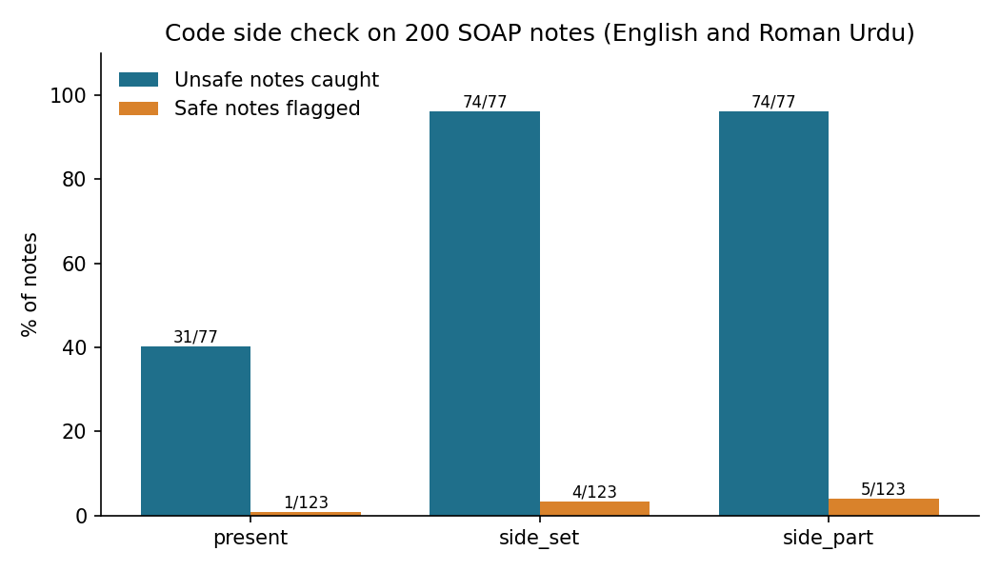

Experiment · Clinical AI · Roman Urdu
Checking the injured side with code, not the AI, caught all 43 wrong sides in Roman Urdu notes
Asking a local AI to write the injured side made it write the wrong side. So I took the side away from the AI and checked it with code. It worked for the side, and showed what a side check cannot see.
By Muzammal Hussain · 4 November 2026 · 4 min read
In my last experiment, a prompt rule, a glossary and one retry all made two small local models write the injured side more often in notes from Roman Urdu consultations, and all of them also made the models write the wrong side more often. The retry used a simple check: "does the note name a side?". That check passes a note that says "right shoulder" for a left shoulder. This time no model is called. I tested three code checks on the 200 notes already written.
Key findings
- Asking "is a side written?" caught none of the 43 notes with a wrong or unsupported side. It only finds missing sides.
- Comparing the side words in the consultation with the note caught all 43, and 74 of the 77 notes the reference marked unsafe on side, while flagging 4 of 123 safe notes.
- Linking each side to a body part added nothing on these notes and added one false flag, from a movement direction ("neck mobility to the left").
- In 20 notes I labelled by hand, the side check passed 5 unsafe notes, and in none of them was the side the problem: the body part was wrong or the side was left in untranslated Roman Urdu.
What I did
I used 200 notes from earlier runs: 40 English notes from the 20-consultation benchmark and 160 Roman Urdu notes from the side rule test (qwen2.5:3b and llama3.1:8b, four conditions). Each check reads only what a real system would see, the consultation in the language spoken and the note, and understands side words in English and Roman Urdu (daayan, daayen for right; baayan, baayen for left).
- Present: flag the note if the consultation has a side word and the note has none.
- Side set: also flag it if the note names a side the consultation never says.
- Side and body part: also flag it if the note puts a side on a body part where the consultation puts the other side.
The reference label comes from the English version of each consultation and the known injured side. Because it reads only English words, I also labelled 20 notes by hand: every note where the side and body part check disagreed with the reference, plus 12 at random.
Results

| Check | Unsafe caught (of 77) | Wrong or unsupported side caught (of 43) | Missing side caught (of 69) | Safe notes flagged (of 123) |
|---|---|---|---|---|
| Present | 31 | 0 | 31 | 1 |
| Side set | 74 | 43 | 66 | 4 |
| Side and body part | 74 | 43 | 66 | 5 |
All 77 unsafe notes were Roman Urdu notes; no English note had a side error. A note that names only the opposite side counts as both wrong and missing, so those columns overlap.
What my own labels showed
Of the 20 notes I labelled, I judged 8 safe and 12 unsafe, looking at the whole note and not only the side. The side set check agreed with me on 15, flagged none of my safe notes, and caught 7 of the 12 unsafe ones. The automatic reference agreed on 14. It missed three notes where llama3.1:8b, given the glossary, added a side to a consultation that had none ("daayan pelvis", "daayan kamar"). The code check flagged all three.
| Case | Consultation | Note | Why the side check passed it |
|---|---|---|---|
| C5 | right ankle sprain | "right knee", possible LCL sprain | side correct, body part wrong |
| C4 | neck pain, no injured side | right hand and shoulder pain | "right" is in the consultation (pain spreading to the right shoulder) |
| C6 | left hip osteoarthritis | "lower back pain (baayan koolha)" | side present, only in Roman Urdu; body part wrong |
| C19 | back pain down the right leg | "the leg (daayen taang mein pair tak dard jata hai)" | side present, only in untranslated Roman Urdu |
What this means
A wrong side is easy to catch once the check compares sides instead of only asking for one. A few lines of code did better here than any prompt fix in my last experiment, and they do not change from run to run.
The same check is blind to a wrong body part, and it counts a side word copied in Roman Urdu as if the note were clear. A physiotherapist who does not read Roman Urdu cannot use "(baayan koolha)". For MeetPhysio, the clinical documentation system I am building, I would use the side set check as the side gate, add a body-part check built the same way, and send any note with untranslated Roman Urdu to the physiotherapist for review.
Limitations
The notes come from 20 consultations I wrote, two models and one run each. The checks read keywords: "right" can mean correct, "to the left" can be a movement direction, and the Roman Urdu word lists cover only the spellings in my transcripts and a few variants. The reference label is automatic, and my hand labels cover 20 notes chosen to include hard cases, judged by one person. The check has not been tried on speech-to-text transcripts.
What I will test next
- A body-part check: body words in the consultation (ghutna, takhna, kandha, gardan) compared with the note.
- A check for untranslated Roman Urdu text in English notes.
- The side check on Whisper transcripts and new consultations.
Follows: Asgari E., Montaña-Brown N., Dubois M., Khalil S., Balloch J., Au Yeung J., Pimenta D. (2025). A framework to assess clinical safety and hallucination rates of LLMs for medical text summarisation. npj Digital Medicine 8, 274. doi:10.1038/s41746-025-01670-7